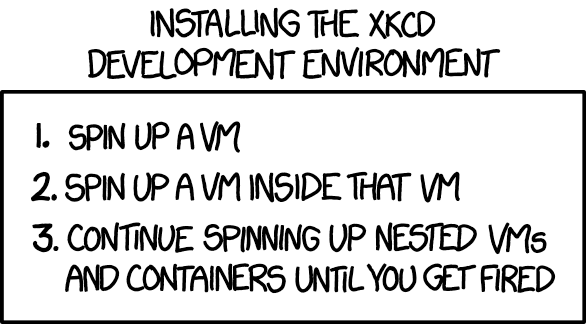

Brian Dolan-Goecke
John Frisk
Version 0.0.1
Copyright 2019 Brian Dolan-Goecke
Slide 12
Brian Dolan-Goecke
Hacking Un*x for 30 year
Started in AT & T SYS VR3
DevOps/Cloud Engineer
Slide 11

Slide 10

Original XKCD comic link https://xkcd.com/1597/
Slide 0
VMWare/Xen/? - Hypervisor
KVM/Hyper-V/VirtualBox - OS Level
Slide 9
QEMU/
Slide 8
Docker/OpenVZ/LXC
Slide 7
Kubernetes/OpenShift
Slide 6
Lambda
Slide 5
Slide 4
Slide 3
Slide 1
Slide 0
The wikipedia pages
Comparison of platform virtualization software
Virtual machine
Slide Additional Resources
Brian Dolan-Goecke
howigit at Goecke - Dolan dot com
Slide exit 0